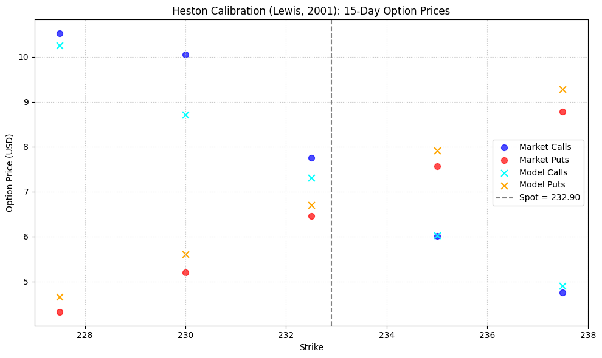
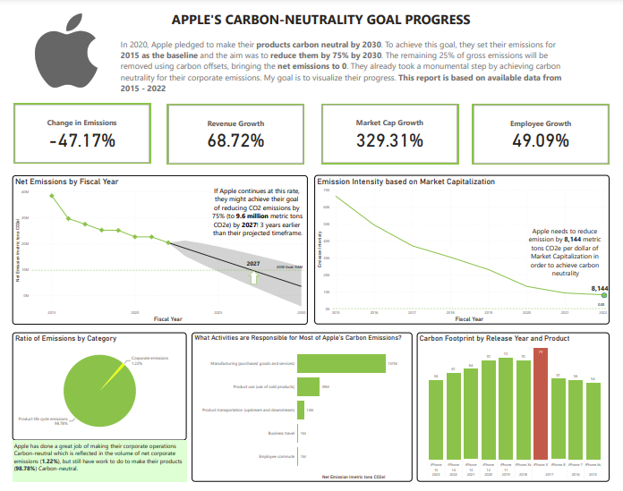

Fraud, AML & Risk
Real-time fraud monitoring, anti-money-laundering and adverse-media models, built to be explainable and audit-ready for compliance teams.
Lagos, Nigeria · Open to opportunities
> Data Scientist_
Data Scientist & ML Engineer with 4 years' experience turning large, complex datasets into trading, commercial and fraud-prevention decisions — from a live high-frequency trading system to production fraud & AML detection.
01.
I'm a Data Scientist & Machine Learning Engineer with 4 years of experience analysing large, complex datasets to inform trading and commercial decisions. I develop, deploy and maintain predictive models — time-series, regression and tree-based methods — including a live high-frequency trading system with a 70% signal hit-rate.
Today I build the machine learning behind Fraudspect, a fraud and AML compliance platform. I've also shipped AI/LLM and NLP systems, from automated feedback assistants to natural-language querying, and I automate end-to-end data workflows with Python, SQL and Apache Spark, deployed through MLflow and CI/CD.
I'm currently completing an MSc in Financial Engineering at WorldQuant University. I'm known for turning ambiguous, high-impact business problems into reliable, data-driven solutions alongside traders, product teams and commercial stakeholders.
View full resumeReal-time fraud monitoring, anti-money-laundering and adverse-media models, built to be explainable and audit-ready for compliance teams.
Signal generation, backtesting and live deployment with position sizing, drawdown limits and stop-loss controls. I also do time-series and stochastic modelling.
Pricing optimisation, segmentation, lead scoring and propensity models, backed by A/B tests and causal inference that change real business numbers.
RAG, LangChain and NLP systems, including automated feedback assistants, natural-language querying and fine-tuned intent classifiers.
02.
03.
A fraud and AML platform for African markets. It covers real-time transaction monitoring, KYC, and sanctions, PEP and adverse-media screening, with case management and regulatory reporting on one dashboard. I build, deploy and maintain the machine learning models that run its fraud, AML and adverse-media detection.
MScFE capstone: LASSO, LightGBM and LSTM classifiers forecast 5-day direction for 11 US sector ETFs; probabilities become volatility-scaled long/flat signals targeting 10% vol, benchmarked after costs on an expanding walk-forward (2008–2026).
A multilingual intent classifier for government-service access that handles noisy, code-switched voice transcripts across four languages. AfroXLMR is fine-tuned with LoRA, with back-translation augmentation, a "data clinic" that audits label quality, and a FastAPI inference service.
Detection system for fintech transaction logs using Isolation Forest and DBSCAN, with robust log parsing and SHAP-based explainability to surface suspicious user behaviour.
Comparative study of clustering, deep learning (CNN) and tree models (Random Forest, XGBoost) with PCA features and class-imbalance handling to find the best approach to e-commerce card fraud.

Calibrates Heston to option data via Lewis (2001) and Carr-Madan (1999) Fourier pricing, extends to Bates (1996) jumps, then fits CIR to the Euribor term structure and simulates future rates.
Tackles non-stationarity (unit roots, cointegration, ECMs on Visa/Mastercard), Markov regime switching and multicollinearity (SPY/IVV/VOO) — derived, estimated, diagnosed and documented.
Replication of Sagaceta-Mejía et al.'s method for emerging markets using optimised technical indicators and neural networks — the foundation later extended in the ETF capstone.
Flags operational anomalies in multivariate sensor data using Mahalanobis distance, PCA reconstruction error and Isolation Forest, with duration rules to separate incidents from a "new normal".
Classification model (Bitgrit competition) predicting whether a crypto asset's price rises or falls over a two-week window.
An open-source framework that combines PostgreSQL hybrid data models with AI-powered natural-language querying. It turns plain-English questions into structured data access for scalable, low-cost genomic analysis.
Led the data-preprocessing phase of an Omdena collaborative project visualising the recent price surge in Nigeria, shipped as an interactive Streamlit dashboard.

Maven Environmental Challenge entry: a data-journalism report on Apple's progress toward carbon neutrality by 2030.
04.
WorldQuant University
Quantitative risk modelling · Credit risk · Time series · Stochastic processes · Optimisation · Derivatives pricing · Monte Carlo · Portfolio optimisation
University of Nigeria, Nsukka
05.
Built a fraud detection model and an end-to-end data pipeline (Snowflake → transform → Power BI) in a 3-person team, then presented the findings under a tight deadline.
Microsoft
WorldQuant University
NVIDIA
WorldQuant University
PECB
IBM · Coursera
06. What's next?
I'm open to data science, ML engineering and quant roles, as well as collaborations on fraud, risk and finance problems. My inbox is always open.
joebasshd@gmail.com